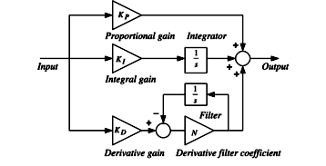

Digital PID Control - Part 2¶

In this section, we will – part-by-part – derive the integral and derivative terms of a PID control. We will use backward Euler, forward Euler, and bilinear transformation for the discretization.
Required Imports¶
from IPython.core.display import HTML
from sympy import *
from mathprint import *
Preparations¶
Kp, Ki, Kd = symbols('K_p K_i K_d', positive=True)
Ts, N = symbols('T_s N', positive=True)
t = symbols('t', positive=True)
s = symbols('s', complex=True)
z = symbols('z')
e, P, I, D = symbols('e P I D')
e1p, e0, e1, e2 = symbols('e_{k+1} e_k e_{k-1} e_{k-2}')
I1p, I0, I1, I2 = symbols('I_{k+1} I_k I_{k-1} I_{k-2}')
D1p, D0, D1, D2 = symbols('D_{k+1} D_k D_{k-1} D_{k-2}')
The Three Transformations¶
FEfor Forward Euler (ZOH)BEfor Backward Euler (ZOH)BTfor Bilinear Transformation (Tustin)
FE = Ts / (z- 1)
BE = z*Ts / (z-1)
BT = Ts/2 * (z+1)/(z-1)
Integral Control Action¶
Let us set \(G_I\) as the integral control transfer funcion and \(K_i\) as the gain.
GI = Ki/s
mprint("G_I(s)= ", latex(GI))
With Backward Euler¶
Let us set \(e\) as the control input and \(I\) as the control output.
eq = Eq(I, e*GI.subs(1/s, BE))
mprint(latex(eq))
eq = (Eq(numer(eq.rhs), eq.lhs * denom(eq.rhs)))
mprint(latex(eq))
eq = expand(Eq(eq.lhs, eq.rhs))
mprint(latex(eq))
eq = expand(eq).subs(e/z**2, e2).subs(e/z, e1).subs(e*z, e1p).subs(e, e0).subs(I/z, I1).subs(I*z, I1p).subs(I, I0)
mprint(latex(eq))
IBE = Eq(collect(eq.rhs, [1/Ts]), collect(eq.lhs, [Ki]) )
mprint(latex(IBE))
IBE = Eq(I1p, solve(IBE, I1p)[0])
mprintb(latex(IBE))
With Forward Euler¶
Let us set \(e\) as the control input and \(I\) as the control output.
eq = Eq(I, e*GI.subs(1/s, FE))
mprint(latex(eq))
eq = (Eq(numer(eq.rhs), eq.lhs * denom(eq.rhs)))
mprint(latex(eq))
eq = expand(Eq(eq.lhs, eq.rhs ))
mprint(latex(eq))
eq = expand(eq).subs(e/z**2, e2).subs(e/z, e1).subs(e*z, e1p).subs(e, e0).subs(I/z, I1).subs(I*z, I1p).subs(I, I0)
mprint(latex(eq))
IFE = Eq(collect(eq.rhs, [1/Ts]), collect(eq.lhs, [Ki]) )
mprint(latex(IFE))
IFE = Eq(I1p, solve(IFE, I1p)[0])
mprintb(latex(IFE))
With Bilinear Transformation¶
Let us set \(e\) as the control input and \(I\) as the control output.
eq = Eq(I, e*GI.subs(1/s, BT))
mprint(latex(eq))
eq = (Eq(numer(eq.rhs), eq.lhs * denom(eq.rhs)))
mprint(latex(eq))
eq = expand(Eq(eq.lhs/Ts, eq.rhs/Ts ))
mprint(latex(eq))
eq = expand(eq).subs(e/z**2, e2).subs(e/z, e1).subs(e*z, e1p).subs(e, e0).subs(I/z, I1).subs(I*z, I1p).subs(I, I0)
mprint(latex(eq))
IBT = Eq(I1p, solve(eq, I1p)[0])
mprint(latex(IBT))
IBT = Eq(I1p, collect(IBT.rhs, Ki*Ts/2))
mprintb(latex(IBT))
Differential Control Action¶
Let us set \(G_D\) as the integral control transfer funcion and \(K_d\) as the gain.
GD = s*Kd
mprint("G_D(s)= ", latex(GD))
With Backward Euler¶
Let us set \(e\) as the control input and \(D\) as the control output.
eq = Eq(D, e*GD.subs(1/s, BE))
mprint(latex(eq))
eq = factor(eq)
mprint(latex(eq))
eq = (Eq(numer(eq.rhs), eq.lhs * denom(eq.rhs)))
mprint(latex(eq))
eq = expand(Eq(eq.lhs/z/Ts, eq.rhs/z/Ts ))
mprint(latex(eq))
eq = expand(eq).subs(e/z**2, e2).subs(e/z, e1).subs(e, e0).subs(D/z, D1).subs(D, D0)
mprint(latex(eq))
DBE = Eq(collect(eq.rhs, [D0, D1]), collect(eq.lhs, Kd/Ts))
mprintb(latex(DBE))
With Forward Euler¶
Let us set \(e\) as the control input and \(D\) as the control output.
eq = Eq(D, e*GD.subs(1/s, FE))
mprint(latex(eq))
eq = expand(eq).subs(e/z**2, e2).subs(e/z, e1).subs(e*z, e1p).subs(e, e0).subs(D/z, D1).subs(D, D0)
mprint(latex(eq))
DFE = Eq(eq.lhs, collect(eq.rhs, Kd/Ts))
mprintb(latex(DFE))
With Bilinear Transformation¶
Let us set \(e\) as the control input and \(D\) as the control output.
eq = Eq(D, e*GD.subs(1/s, BT))
mprint(latex(eq))
eq = factor(eq)
mprint(latex(eq))
eq = (Eq(numer(eq.rhs), eq.lhs * denom(eq.rhs)))
mprint(latex(eq))
eq = expand(Eq(eq.lhs/z/Ts, eq.rhs/z/Ts ))
mprint(latex(eq))
eq = expand(eq).subs(e/z**2, e2).subs(e/z, e1).subs(e, e0).subs(D/z, D1).subs(D, D0)
mprint(latex(eq))
DBT = Eq(D0, solve(eq, D0)[0])
mprint(latex(DBT))
DBT = Eq(D0, collect(DBT.rhs, 2*Kd))
mprintb(latex(DBT))
Differential Control Action with Derivative Filter¶
Let us set \(G_D\) as the integral control transfer funcion, \(K_d\) as the gain and \(1/N\) as the filter time-constant.
GDF = s*Kd*1/(1/N*s+1)
mprint("G_D(s)= ", latex(GD))
GDF = simplify(GDF)
mprint("G_D(s)= ", latex(GD))
With Backward Euler¶
Let us set \(e\) as the control input and \(D\) as the control output.
eq = Eq(D, e*GDF.subs(1/s, BE))
mprint(latex(eq))
eq = factor(eq)
mprint(latex(eq))
eq = (Eq(numer(eq.rhs), eq.lhs * denom(eq.rhs)))
mprint(latex(eq))
eq = expand(Eq(eq.lhs/z/Ts, eq.rhs/z/Ts ))
mprint(latex(eq))
eq = expand(eq).subs(e/z**2, e2).subs(e/z, e1).subs(e, e0).subs(D/z, D1).subs(D, D0)
mprint(latex(eq))
DBEF = Eq(collect(eq.rhs, [D0, D1]), collect(eq.lhs, N*Kd/Ts))
mprint(latex(DBEF))
DBEF = Eq(D0, collect(solve(DBEF, D0)[0], Kd*N))
mprintb(latex(DBEF))
With Forward Euler¶
Let us set \(e\) as the control input and \(D\) as the control output.
eq = Eq(D, e*GDF.subs(1/s, FE))
mprint(latex(eq))
eq = factor(eq)
mprint(latex(eq))
eq = (Eq(numer(eq.rhs), eq.lhs * denom(eq.rhs)))
mprint(latex(eq))
eq = expand(Eq(eq.lhs/Ts, eq.rhs/Ts ))
mprint(latex(eq))
eq = expand(eq).subs(e/z**2, e2).subs(e/z, e1).subs(e*z, e1p).subs(e, e0).subs(D/z, D1).subs(D*z, D1p).subs(D, D0)
mprint(latex(eq))
DFEF = Eq(collect(eq.rhs, [D0, D1]), collect(eq.lhs, Kd*N/Ts))
mprint(latex(DFEF))
DFEF = Eq(D0, collect(solve(DFEF, D0)[0], [Kd*N, D1]))
mprintb(latex(DFEF))
With Bilinear Transformation¶
Let us set \(e\) as the control input and \(D\) as the control output.
eq = Eq(D, e*GDF.subs(1/s, BT))
mprint(latex(eq))
eq = factor(eq)
mprint(latex(eq))
eq = (Eq(numer(eq.rhs), eq.lhs * denom(eq.rhs)))
mprint(latex(eq))
eq = expand(Eq(eq.lhs/z/Ts, eq.rhs/z/Ts ))
mprint(latex(eq))
eq = expand(eq).subs(e/z**2, e2).subs(e/z, e1).subs(e, e0).subs(D/z, D1).subs(D, D0)
mprint(latex(eq))
DBTF = Eq(D0, collect(solve(eq, D0)[0], [2*Kd*N, D1]))
mprintb(latex(DBTF))
Summary¶
Integral Terms¶
Let us summarize the integral terms. Note that the backward Euler method and the bilinear transform method result in implicit-form equations.
Show code cell source
from pandas import DataFrame
from IPython.display import Markdown
def makelatex(args):
return ["${}$".format(latex(a)) for a in args]
descs = ["Backward Euler",
"Forward Euler",
"Bilinear Transform"]
vals = [IBE, IFE, IBT]
dic = {'Method': descs,
'Integral term': makelatex(vals),}
df = DataFrame(dic)
Markdown(df.to_markdown(index=False))
Method |
Integral term |
|---|---|
Backward Euler |
\(I_{k+1} = I_{k} + K_{i} T_{s} e_{k+1}\) |
Forward Euler |
\(I_{k+1} = I_{k} + K_{i} T_{s} e_{k}\) |
Bilinear Transform |
\(I_{k+1} = I_{k} + \frac{K_{i} T_{s} \left(e_{k} + e_{k+1}\right)}{2}\) |
Derivative Terms¶
Let us summarize the derivative terms. Note that forward Euler results in non-causal equation.
Show code cell source
descs = ["Backward Euler",
"Forward Euler",
"Bilinear Transform"]
vals = [DBE, DFE, DBT]
dic = {'Method': descs,
'Derivative term': makelatex(vals),}
df = DataFrame(dic)
Markdown(df.to_markdown(index=False))
Method |
Derivative term |
|---|---|
Backward Euler |
\(D_{k} = \frac{K_{d} \left(e_{k} - e_{k-1}\right)}{T_{s}}\) |
Forward Euler |
\(D_{k} = \frac{K_{d} \left(- e_{k} + e_{k+1}\right)}{T_{s}}\) |
Bilinear Transform |
\(D_{k} = \frac{- D_{k-1} T_{s} + 2 K_{d} \left(e_{k} - e_{k-1}\right)}{T_{s}}\) |
Derivative Terms with Low-Pass Filters¶
Let us summarize the filtered derivative terms. Note that forward Euler also results in non-causal equation.
Show code cell source
descs = ["Backward Euler",
"Forward Euler",
"Bilinear Transform"]
vals = [DBEF, DFEF, DBTF]
dic = {'Method': descs,
'Derivative term + low-pass filter': makelatex(vals),}
df = DataFrame(dic)
Markdown(df.to_markdown(index=False))
Method |
Derivative term + low-pass filter |
|---|---|
Backward Euler |
\(D_{k} = \frac{D_{k-1} + K_{d} N \left(e_{k} - e_{k-1}\right)}{N T_{s} + 1}\) |
Forward Euler |
\(D_{k} = \frac{- D_{k+1} + K_{d} N \left(- e_{k} + e_{k+1}\right)}{N T_{s} - 1}\) |
Bilinear Transform |
\(D_{k} = \frac{D_{k-1} \left(- N T_{s} + 2\right) + 2 K_{d} N \left(e_{k} - e_{k-1}\right)}{N T_{s} + 2}\) |